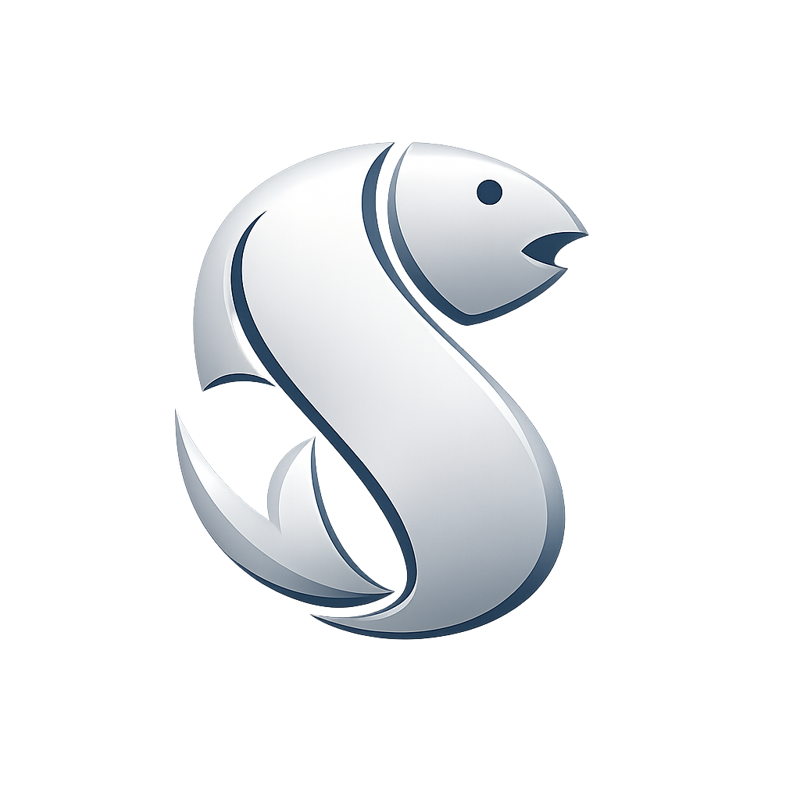
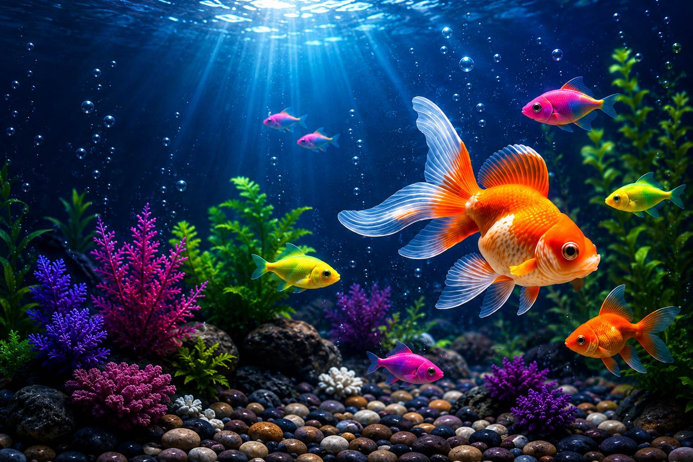

From vibrant gold fish to stunning colour widow, find everything for your perfect aquarium.
DISCOVER MORE →Welcome to Silver Fish Aquarium, your destination for beautiful aquarium fishes, accessories and complete aquarium solutions. We provide healthy fishes and quality products for beginners and aquarium lovers. Our Shop was started in 2002 We provide all types of aquarium smallest to biggest size , we provide complete accesories of tropical aquarium like led, stone, oxygen pump, plants,live plant's And all sale every type of medicine for fishes and many more other We sale all types of fishes from soft fishes to monster fish like Gold fish, carp koi , molly, guppy, Zebra, colour widow, Betta's, flower horn, arwana, oscar, parrot, chiklet, gorami, japanese koi, Coco fish, and we also take special order for special fishes
Guaranteed
Always Fresh
You Can Trust
For Beginners & Pros
Fast Delivery
Explore different types of fishes, aquariums and accessories.
Visit Silver Fish Aquarium for your dream aquarium! Established in 2002, we provide all types of aquariums from the smallest to the biggest sizes, complete tropical accessories, specialized fish medicines, and a wide variety of fishes from soft to monster sizes. We also take special orders for unique breeds.
Visit Silver Fish Aquarium for your dream aquarium.